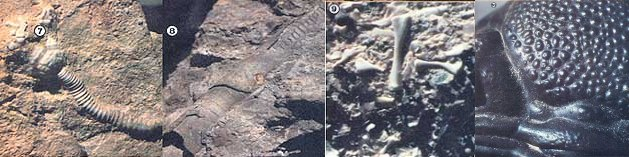

[7] An intact flowerlike crinoid-a sea animal with a stem, head, and arms?will bring 880 or more from a collector, and if you're lucky enough to find a whole group of crinoids on a slab, the rock will be almost priceless! (8J This once-living creature?now a rare fossil?is known as a straight cephalopod, a member of a group that reached its zenith in the time of the dinosaurs and included some of the most spectacular of ancient creatures. [9] Many millions of years ago?around the time the Appalachians were formed?these bones turned to stone. They were recently unearthed by our fossil-hunting author. [10] This monsterlike, perfectly preserved trilobite head looks like a prehistoric creature . . . which, of course, is just what it is!